Keyframes are the frames contained in a video stream that contain the entire information about itself, delta-frames however only contain what has changed from a previous frame in order to avoid redundancy and improve compression. When evaluating how good a video encoder is, it's important to take into consideration numerous frames in order to see how it actually performs since a good portion of the magic is done in reconstructing the information from few keyframes. However, if you were to use those video encoders as image encoders all that matters to you is how well they perform on keyframe encoding since your source only has a single frame. This is exactly what gave us formats like WebP (based on VP8), and HEIF (can contain AVC or HEVC streams, support for AV1 streams (AVIF) seems to be on the horizon).
The goal of this study is simply seeing how different encoders behave at different bitrates and different anime source images, however it should not be taken as ground truth since the number of samples isn't exactly high (only 4 different FHD frames were compared) and the encoders weren't fine tuned either.
The latest versions of the encoders included in FFMpeg were used as of October 2018. The encoders used were libaom for AV1, libvpx for VP9, x264 for AVC and x265 for HEVC.
The methodology is quite simple and reproducible:
With the methodology out of the way, we can take a look at the actual results:
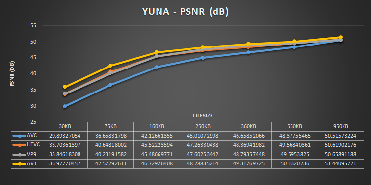
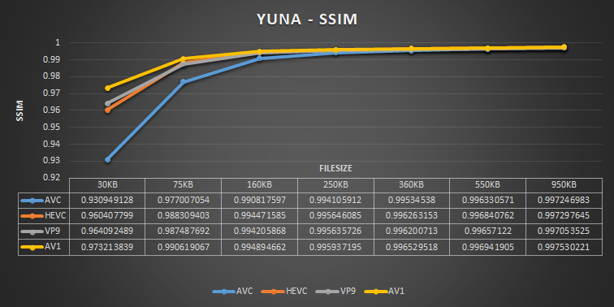
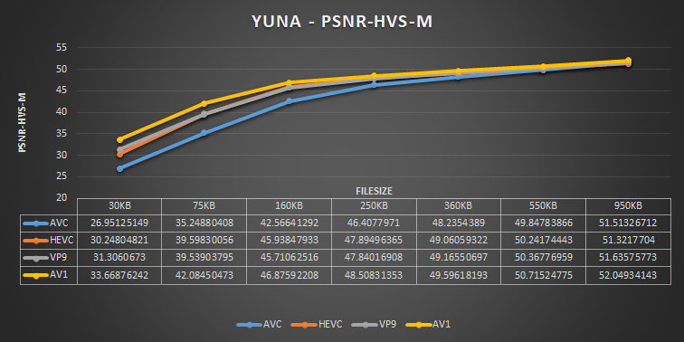
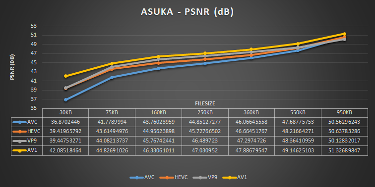
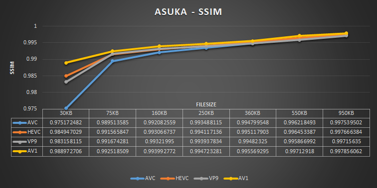
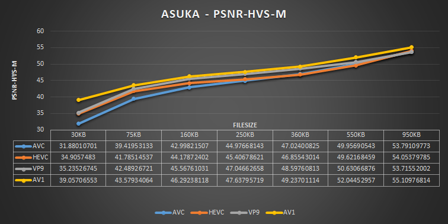
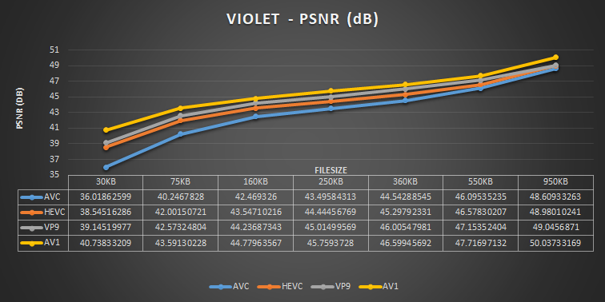
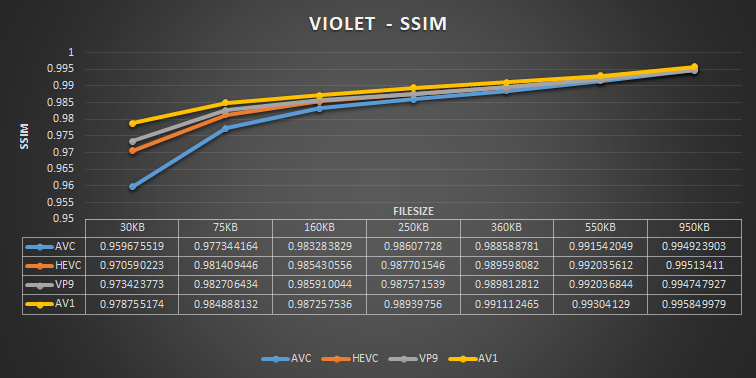
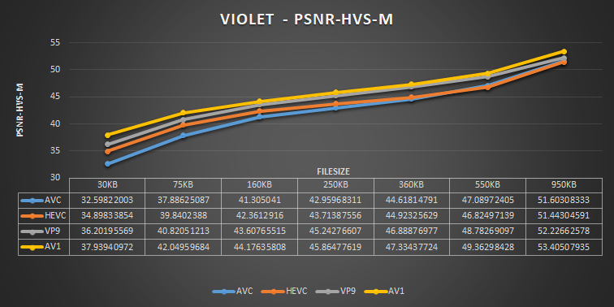
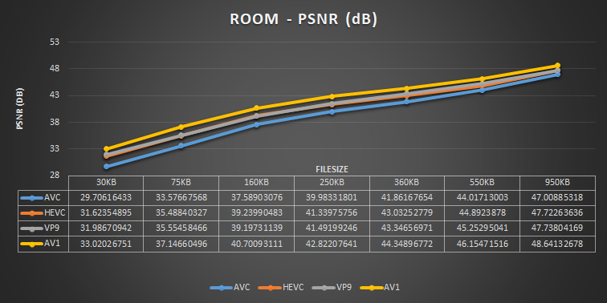
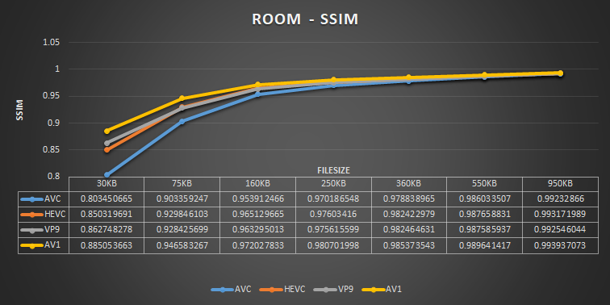
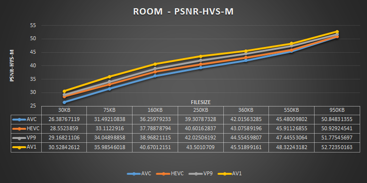
The first image, YUNA, is a good representation of what we can expect from high quality anime frames. It's clear that we have more low-frequency components than high-frequency components, but the sharp lines and details need to be preserved otherwise it's extremely easy to spot blurring, which might not always be the case for live-action frames. We see that the number of different colour tones and high-frequency details has a high correlation with how efficient the encoders can be, the hardest image to encode was clearly ROOM due to the ridiculous amount of detail, and all measurements agree with it.
We can see an average of the 4 tests in the graphs below:
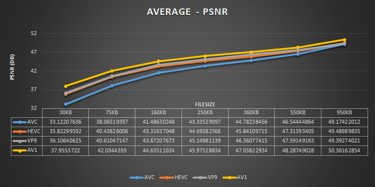
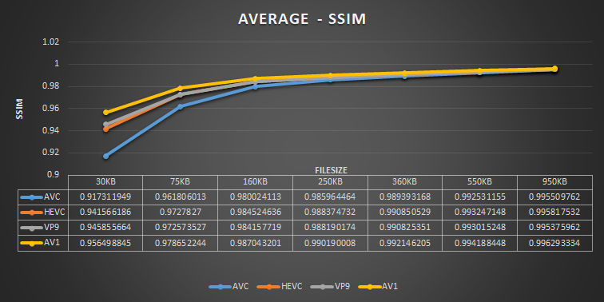
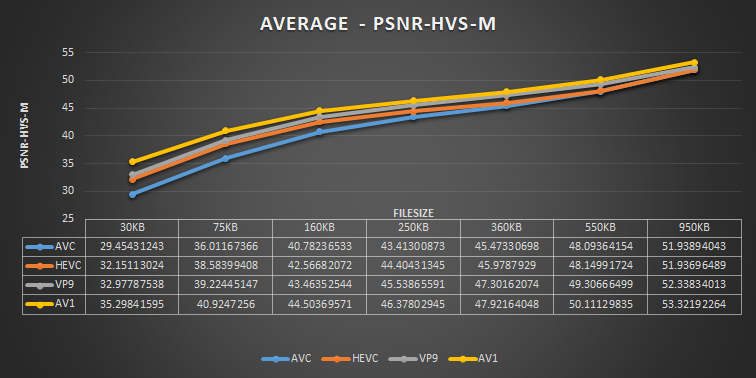
It's extremely surprising to see libvpx beating x265 on most filesizes, but keep those encoders do have PSNR/SSIM affecting features that theoretically should improve perceived image quality despite the lower measurements. Those features, called psycho-visual optimisations, can be turned off with flags, which might improve the encoder's performance on said metrics. Since I was using default (with the high quality presets) settings, psycho-visual optimisations were turned on.
Libaom beating everything was expected, which is great considering that the encoder is still immature and will improve over time. The caveat here is that it's also absurdly slow, and would be ridiculously painful to use when encoding actual videos.
It seems that we can be happy that HEIF is slowly getting some momentum, even the worst tested video encoder is still leagues above jpeg encoders and the image compression future seems bright.